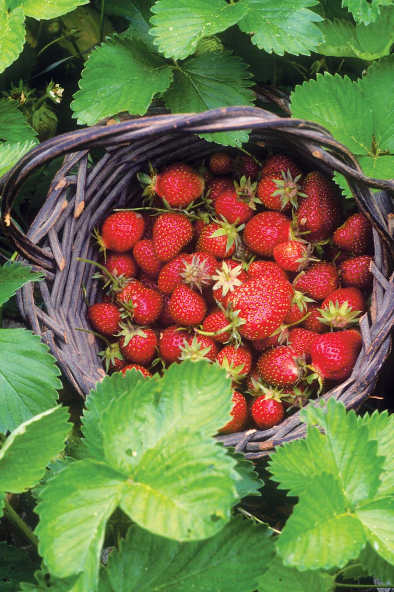
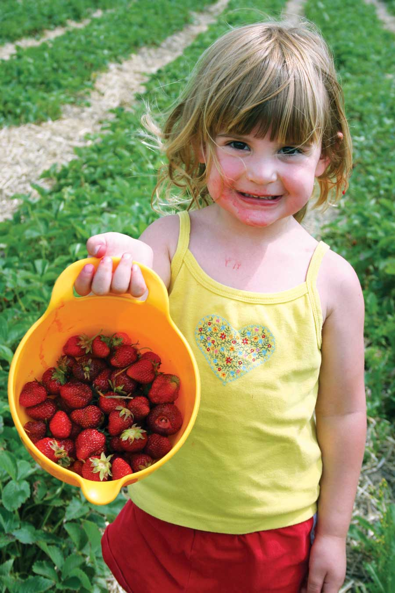
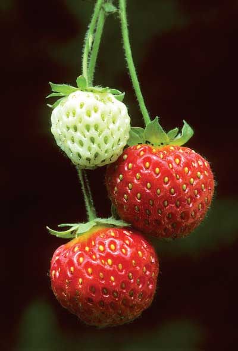

Everybody’s hungry for fresh fruit by late spring, which is why early-bearing strawberries are irresistible. There are two types: June-bearers, which produce their crop for three weeks in late spring or early summer, and ever-bearers, which set fruit from spring to fall. Bill and Sheila Krohne, owners of Krohne Plant Farms in Hartford, Mich., think June-bearing varieties produce better quality berries. The leader of the pack is ‘Earliglow,’ which Bill says is the sweetest, best-flavored strawberry he sells. June-bearing strawberries can produce up to a quart of fruit per plant. Fertilize in early spring, just as the plants show vigorous new growth, and your strawberries will be off and running.
June-bearing strawberries produce lots of runners, so rows quickly become a tangle of plants. To capitalize on this habit, manage the plants as a ground cover. Then mow the tattered foliage down in midsummer, and mulch between plants.
Ever-bearing strawberries, which include most strawberries sold for container growing, produce fruit from spring to fall as long as they’re given attentive care. If you pinch off early-season blossoms and runners, these varieties can turn out a strong late-summer crop, or you can leave them unpinched and enjoy hunting for ripe berries whenever you’re in the mood. The constant emergence of new growth requires support from fertile soil, with a pH of 5.8 to 6.5, or regular fertilizer (like mix-with-water fish/kelp products), but ever-bearing strawberries are worth a little extra trouble. Newer varieties such as ‘Albion,’ ‘Seascape’ and ‘Evie 2’ don’t produce many runners, which makes them easy to manage in containers or in cushy pockets in a stone wall. The Krohnes especially like ‘Albion,’ which they think is almost as good as ‘Earliglow.’
Preferred soil pH for strawberries is 5.8 to 6.5.
View the strawberry types chart for details on the best varieities of June-bearing and ever-bearing strawberries, plus pros and cons of each, as well as information on where they grow best.
Find strawberry seeds and plants with our Seed and Plant Finder.
To learn how to use currants in your home landscape, check out the new book Landscaping with Fruit by Lee Reich (Tower, 2009).
See also:
|
 NORM EGGERT Enjoy the season’s first fruit: sweet strawberries! |
 CINDY RUGGIERI Strawberries are the first fruits to pick, and everyone loves ’em! |
 DWIGHT KUHN Ripening strawberries on the vine. |